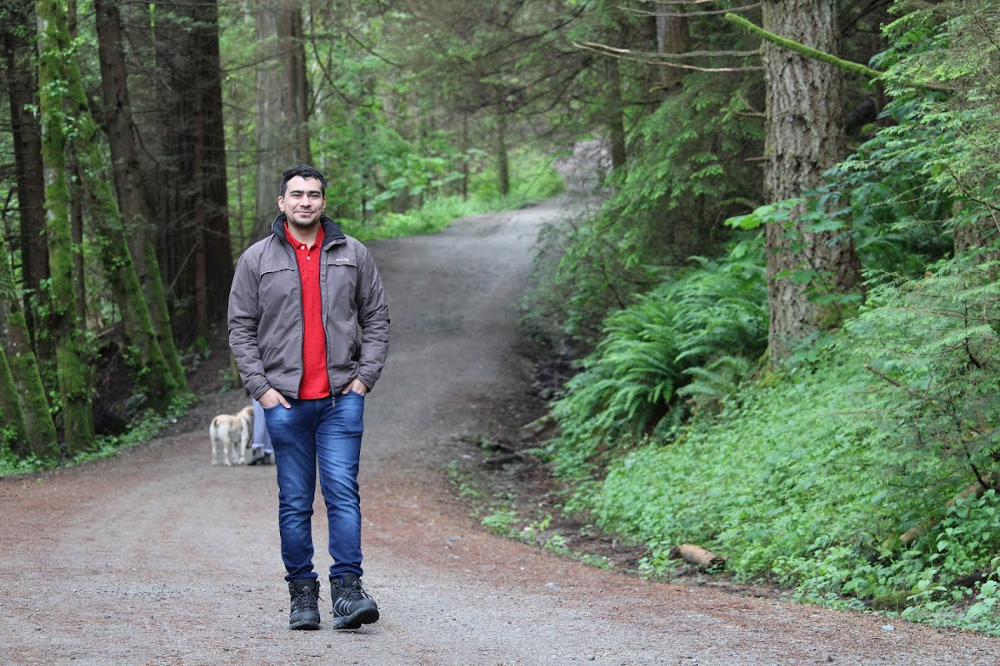

Rais Ibrahim Mustafa Hasan

Summary
Experienced IT Infrastructure System Admin with over 7 years of career progression and a strong track record of meeting business requirements in diverse settings. Adaptable and goal-oriented with excellent cross-functional skills, including relationship management, client/stakeholder engagement, and leadership in IT technical teams. Proficient in customizing IT infrastructure and providing valuable business guidance.
Education
- MSc. Advanced Computing - Edinburgh Napier University (E.N.U.), U.K (2014-2015)
- MSc. Tech Embedded Systems - Manipal University, India (2013-2015)
- B.Tech Electronics and Communications Engineering - JNTU - Hyderabad, India (2008-2012)
Work Experience
Customer Service Analyst - Amazon Development Center India
June 2012 – July 2013
-
Customer service: To assist customers from North America.
-
Technical Troubleshooting: Resolve issues related to consumer orders and Kindle at Amazon on a day-to-day basis through a chat channel.
-
Initiative taken: Became a member of Kaizen Team (Process Improvement) and generated ideas to improve the process. As part of the Kaizen team, published pivot tables and bar graphs from the data provided by the managers
-
Recognition: Awarded 2 Customer Obsession Awards, best team best performance during the peak season (Nov 2012- Feb 2013), 5 out of 6 R & R awarded during the peak season.
Technical Analyst - C3i
September 2015 – December 2015
-
Provide comprehensive technical support services to support center customers.
-
Work within Service Level Agreements, including but not limited to Average Speed of Answer, Average Talk Time, Abandon Time, Hold Times, etc.
-
Take all steps to troubleshoot connectivity issues reported and resolve or escalate to the appropriate contact.
-
ITS Senior Analyst - Deloitte Consulting
December 2015 – November 2018
-
Worked in setting up Offshore Development Centers (ODC) for over 10 banking sectors from the Infrastructure level, Procurement of Hardware, deploying of Windows, Network and Security controls.
-
Developed Laptop, Peripherals and Mobile phone, lifecycle model as a part of process improvement to ensure IT could keep a track of the Assets the employees hold and prevent thefts/misuse.
-
Develop Department Policies and procedures to ensure that the department operates effectively and reliably by developing service level agreements (SLAs) for the help desk and develop guides for users and technicians such as FAQ documents for IT department personnel
-
As a part of End of Lease and Asset Management activity lead the hardware upgrade of over 5000 laptops across India.
-
Collaborated with various business units (Consulting, Support, Finance) in upgrading over 2000 laptops to Windows 10 across Deloitte India.
-
Lead the Mac System Admin team across the Region
-
IT Field Technician at “Uber” - Milestone Technologies Inc., Hyderabad
November 2018 – October 2019
-
MacOS, Account Management, iPads, SaaS applications
-
Provide basic A/V, mobile device management, and network support.
-
Troubleshoots client-side network connectivity issues, including digital authentication, remote access, secure Wi-Fi and wired connectivity to the internal network.
-
Responsible for maintaining local inventory accuracy and coordinating equipment logistics.
- Order, receive, unboxing and organizing deliveries.
- Track and issue hardware, software, and peripherals.
-
Help Desk Tech 2 at “Slack” - Milestone Technologies Inc., Vancouver
November 2019 – March 2021
-
Slack Administrator & Account Management: Contributing in constant growth by onboarding (prepares new hire hardware for deployment) and offboarding Slack employee accounts.
-
Provides service, maintenance, repairs and upgrades for all computers and peripherals as well as routine moves, adds and changes.
-
Exhibit strong competence in strategic execution of technology with the distinction of launching and driving new IT initiatives, Risk and Security Controls and achieving organizational objectives.
-
Maintained local inventory accuracy and coordinated equipment logistics, ensuring timely delivery of
hardware, software, and peripherals to 500+ users across multiple locations.
-
Sr. Customer Experience Agent - Slack, Vancouver
March 2021 - Present
-
Provided access support to 1000+ customers as part of the Access specialist team, achieving a 98%
customer satisfaction rating and ensuring minimal disruption to daily operations.
-
Successfully troubleshooted 500+ connectivity issues on Slack from Netlog, achieving an average
resolution time of 30 minutes and maintaining a high level of user satisfaction.
-
Identified and reported 50+ bugs in the product to the Engineering Team, resulting in timely deployment of
fixes and ensuring a high-quality product for customers.
-
Analyzed app crash logs and identified root causes of crashes, working with cross-functional teams to
implement fixes and prevent future occurrences, resulting in a 25% decrease in the number of app crashes.
Skills
- Customer Service : ⭐️⭐️⭐️⭐️⭐️
- Technical Troubleshooting: ⭐️⭐️⭐️⭐️⭐️
- Asset Life Cycle Management: ⭐️⭐️⭐️⭐️
- Mobile Device Management (MDM): ⭐️⭐️⭐️
- Change & Risk Management: ⭐️⭐️⭐️
Certifications
Contact